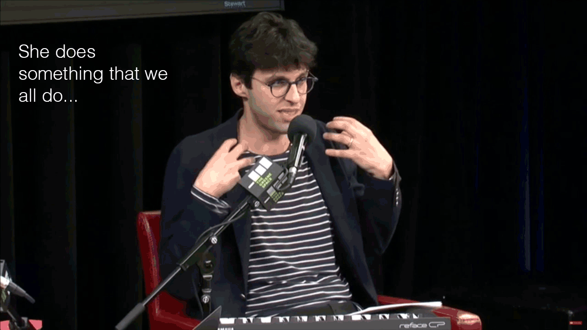

Harding and Sloan model embodiment through gesture as they interpret/understand sounds themselves (as learners) and explain/communicate those interpretations (as teachers). Embodiment rejects mind-body dualism and instead asserts that we think and act with our entire bodies. From the human-computer interaction tradition, I draw on Dourish, who writes that, “Embodied phenomena are ones we encounter directly rather than abstractly” and that “a disembodied brain could not experience the world in the same ways that we do, because our experience of the world is intimately tied to the ways in which we act in it” [Dourish 2004].
I began my exploration of gesture in a playscript, where I did my best to describe them in detail with words (i.e. ((rasies just left hand to shoulder height, kind of opens and closes as if grasping))). I then attempted to capture gesture through sketching (see below), and finally by creating animated GIFs.
Gesture sketch illustrating “wrist flicking” motion to cue audience for chorus sing-a-long.
I focus on two specific instances of embodiment and their roles in learning to listen: how Harding uses social embodiment to co-construct the sing-a-long with the audience; and how Sloan uses gestural embodiment to explain the themes of the chorus.
During the singalong, Harding starts to laugh halfway through the chorus, signaling that he is having trouble getting the words and melody right. In the front row, near Harding, we can see two audience members using their arms to count out the rhythm, moving their fist-shaped hands up and down to punctuate the “Oh baby baby” line. It is hard to tell for sure from the camera angle, but it seems Harding is looking directly at them, rather than at the entire audience, and coordinating his motion with them (see below). Perhaps those audience members are helping Harding through this embodied performance. This moment hints at how this embodied way of understanding music is happening socially, a co-constructed moment of embodied listening and understanding.
Harding looks at two audience members in the front row, who are grooving and moving their arms along with the beat of the song.
After the sing-a-long, Sloan explains the meaning of the two-part “Oops!...I Did It Again” chorus. As Sloan readies himself for his expository monologue, he grabs his paper script from his lap, shuffles/organizes the papers, and glances at the script, readying himself for an extended period of exposition during which he will keep his eyes focused on the audience:
"So at the end of this song, it raises a question: Who is Britney Spears? We still don't have an answer. She is multiple things at once. She is performing different identities. And this was, again, very, uh, vexing to a lot of critics when this song came out. But now maybe with the benefit of hindsight we can step back and see how masterfully this is done. She never truly reveals herself, she keeps us guessing, and in performing multiple aspects of her identity, she does something that we all do. None of us are just one thing, we are all composed of multitudes. And I think that’s what this song really captures.""
This 40-second long segment of Sloan’s is distinct from the previous interactions: Sloan is looking almost exclusively at the audience, rather than over at Harding or down at his script; and Harding doesn’t interrupt Sloan until the very end. During this monologue, Sloan uses gestures liberally, even though he is a podcaster who is skilled at communicating with his voice alone.
These gestures serve to reinforce and punctuate, in an embodied way, the claims he is making about how to interpret music: Synchronously with the word “masterfully” he moves his hands in a motion as if he were playing the piano:
During the line, “in performing multiple aspects of her identity, she does something that we all do,” Sloan transitions from having his hands wide apart, moving up and down in a kind of popcorn motion, to bringing his hands close to his chest:

Throughout this explanation, Sloan is using tools that he had demonstrated while performing music (singing karaoke) and while listening (to the soundbite)— his gestural emphasis and his pacing—to communicate concepts that extend beyond the song itself, and indeed even beyond music. These gestures punctuate, emphasize, and reinforce the arguments he is making.
This resonates with Mitchell’s assertion that there are no purely visual media, that, “Seeing painting is seeing touching, seeing the hand gestures of the artist, which is why we are so rigorously prohibited from actually touching the canvas ourselves” [Mitchell 2005]. Similarly, hearing music is feeling the hand playing the piano and the jaw of the singer, as well as seeing those actions take place.
Honing in on which elements of listening are visually salient, which lend themselves to being communicated through gesture, might open up new avenues for design. Perhaps learning to listen employs multiple, complementary types of sensemaking, such as aural/auditory, linguistic, social, even visual sensemaking. Perhaps embodied gestures — singing, swaying, moving, articulating, even making social connections — which are disparate actions all grounded in the body, might serve as a bridge between the different, complementary types of sensemaking that contribute to learning to listen.